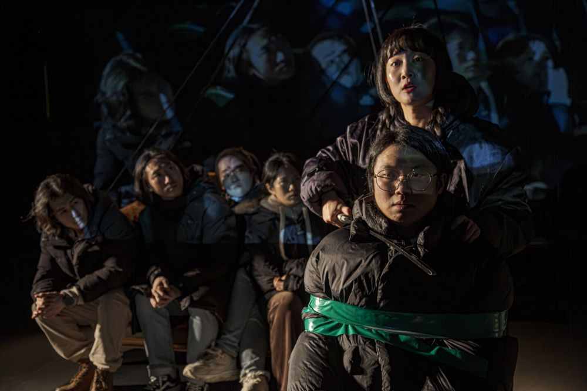

History Dispute Project: a three-year project that rejects the victors' point of view and rewrites history from our own. Throughout 2024 Green Pig staged one performance a month, each starting from an event of the same month a year earlier. January. History is the record of the moments when our bodies meet the world, and must be understood as a verb, not a noun. In history, shame tends to fall to survivors and victims rather than perpetrators. The piece records situations of that shame.
2024.1.12–21 / Art Space Hyehwa - History Dispute Project, January
Director: Yoon Hansol
Assistant director: Jung Yujin
Text: Jeon Sunghyun
Cast: Kim Yonghui, Kim Wontae, Park Subin, Lee Seunghun, Jung Namu, Jung Yeonjong, Choi Jihyeon
Voice: Song Jeonghwa
Singing coach: Park Giwon
Documentation: Han Munhui
Graphic design: Workroom
Producer: Na Yujin, Noh Jisang
2024.3.22 Criticism, Kim Okran (Naver blog)
2024.1.29 Audience review
2024.1.26 Audience review
Previous: The Nightmare Also Gazes Into You | Next: Real Theater: The Immortal Lee Kiseok
Back to the archive | Any work
Published 2026.11.13